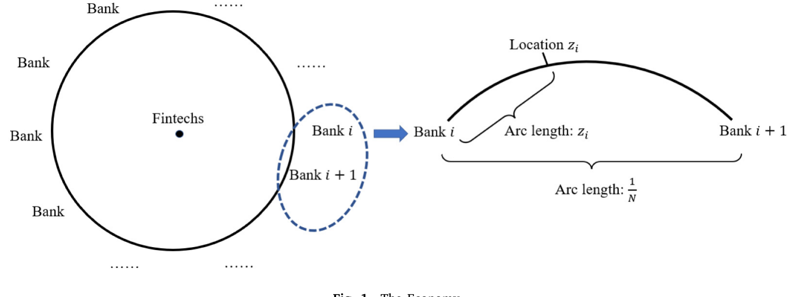
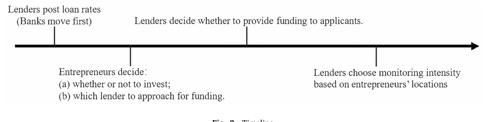
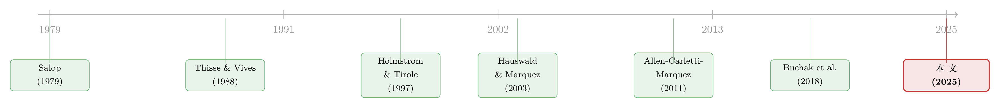

监督做得更差，却照样抢走你的客户——金融科技凭什么挤进信贷市场
本文读的是 Vives & Ye (2025, Journal of Financial Economics)：作者用一个 Salop「环形城市」的空间竞争模型刻画银行与金融科技公司在贷款市场上的对垒，得到一个反直觉的核心结论——即便金融科技在监督效率、资金成本上都不占优，它依然能成功进入并抢走借款人，靠的是「灵活定价」这一件武器；而银行被「统一定价」束缚住了手脚。进一步地，金融科技进入是否改善社会福利，取决于它的监督效率是否够高、以及科技公司之间的竞争强度是否「不高不低」。
1 一个让人别扭的事实
先抛一个看上去不太讲得通的事实。
在美国，2019 年美联储的小企业信贷调查显示，差不多 三分之一 申请融资的中小企业（SME）找过金融科技或线上贷款机构，而这个比例在 2016 年还只有 19%；2016 到 2020 年间，美国金融科技对企业放贷的规模年增速一度超过 40%（Berg et al., 2022）。在中国，蚂蚁、微众这样的机构给数以百万计的小微企业放贷。
金融科技来势汹汹，这没什么稀奇。稀奇的是另一件事：很多金融科技在「看人」这件事上，未必比银行强。 Beaumont et al. (2024) 发现，在法国的中小企业市场，金融科技的借款人比银行借款人更容易走到破产清算那一步——他们据此干脆断言，光靠「更强的信息处理技术」根本解释不了金融科技的崛起。Di Maggio & Yao (2021) 也发现，控制住可观测特征之后，美国个人贷款市场里金融科技的借款人违约概率更高。
于是一个自然的问题是：如果金融科技在「监督借款人、压低违约」这件最核心的本事上并不占优，它凭什么能从盘踞多年的银行手里抢到生意？是补贴砸钱？是资金更便宜？
Vives 和 Ye 给的答案，既不是补贴也不是资金成本。他们说：真正的胜负手，是 谁能对不同的客户「区别报价」。银行不能，金融科技能。这一条，足以让一个监督做得更差的进入者，活生生在老牌银行的地盘上撕开一道口子。
要把这个故事讲清楚，得先看看他们搭的这座「城」。
2 一座环形的城：模型设定
作者沿用 Salop (1979) 的经典框架，把整个信贷市场画成一个 周长为 1 的环形城市。
- 城里住着一群 企业家（entrepreneurs），环上的每一个点，代表一种企业家的「特征」——项目类型、技术、地理位置、所属行业。
- 城里有两类放贷人：
N ≥ 2家 银行（banks），等距分布在环上，相邻两家银行的弧距是1/N；外加两家 金融科技公司（fintechs），它们（虚拟地）坐落在圆心。
银行等距分布，意味着它对离它「近」的企业家了如指掌，对「远」的就力不从心——这个「距离」既可以是物理距离，也可以是「专长距离」：一家银行往往只在某些行业有真本事（Blickle et al., 2025；Paravisini et al., 2023）。而坐在圆心的金融科技，对所有企业家 等距：用数字技术连接客户，它对各种行业、各种地段的企业的处理能力是「一视同仁」的。

Figure 1: The Economy
把一个位于银行 \(i\) 与银行 \(i+1\) 之间的企业家记在位置 \(z_i\)，它到银行 \(i\) 的弧距是 \(z_i\)，到银行 \(i+1\) 的弧距就是 \(1/N - z_i\)。
每个企业家手里有一个需要 1 单位资金的风险项目，自己没本钱，必须借。项目的回报是这样一个二元随机变量：
$$\tilde{R}(z_i) = \begin{cases} R & \text{with probability } m(z_i),\\[2pt] 0 & \text{with probability } 1-m(z_i).\end{cases}$$
这里的 \(m(z_i)\in[0,1]\) 就是 监督强度（monitoring intensity）——放贷人盯得越紧，项目成功的概率越高。这是本文一个关键的建模选择：监督不是像 Holmstrom & Tirole (1997) 那样去压低借款人偷懒的私人收益，而是 直接抬高项目的成功概率，沿用的是 Allen, Carletti & Marquez (2011) 与 Martinez-Miera & Repullo (2017) 的传统。
给定贷款利率 \(r(z_i)\) 和监督强度 \(m(z_i)\)，企业家的期望效用是
$$\pi^e(z_i) \equiv \big(R - r(z_i)\big)\,m(z_i).$$
每个企业家还有一个保留效用 \(u\)（即放弃项目去干别的所能得到的机会成本），在 \([0,M]\) 上均匀分布。只有当 \(\pi^e(z_i) > u\) 时她才会来借钱。于是位置 \(z_i\) 处的总资金需求，恰好等于这一点的期望效用：
$$D(z_i) \equiv M\int_0^M \frac{1}{M}\,\mathbf{1}_{\{\pi^e(z_i)\ge u\}}\,du = \pi^e(z_i). \tag{1}$$
这个式子很漂亮：放贷人给的「好处」越多（利率越低、监督越足、\(\pi^e\) 越大），来借钱的企业家就越多。 竞争的本质，就是抢着把 \(\pi^e\) 做大。
3 银行与金融科技的三条分水岭
模型的灵魂，藏在两类放贷人「不一样」的地方。作者把差异凝练成三条，外加一个「便利性」。
第一条，也是最关键的一条：定价的灵活性。 银行只能对它服务的所有企业家报 同一个 贷款利率（uniform loan rate）；金融科技则可以根据企业家所在的位置 \(z_i\) 报 歧视性 的利率表 \(r_{Fj}(z_i)\)。为什么银行做不到区别报价？现实里有两层原因：一是技术，Buchak et al. (2018) 发现，标准变量在解释金融科技的房贷利率时解释力更弱、利率更分散，说明它们用了非标准的、基于数据的定价；二是监管，银行受到的反歧视审查更严、可失去的（比如存款特许权）更多，所以更不敢做价格歧视。Begenau & Stafford (2023) 甚至发现，美国的银行——尤其是大银行——干脆在所有分行采用 统一的存款利率政策。（关于银行为什么明明面对不同的本地竞争，却选择全国一个价，可参见《你以为银行在跟邻居竞争，其实它在全国统一调价》。）
第二条，监督效率随距离衰减。 银行监督一个距它 \(d\) 的企业家，要付出的成本是
$$C_B\big(m(z_i),d\big) = \frac{c_B}{2(1-qd)}\,\big(m(z_i)\big)^2,$$
参数限制为 \(c_B>R\)、\(R>\sqrt{2c_B\iota_B}\)、\(q\in(0,2)\)、\(d\ge 0\)。把它拆开看：
对照之下，金融科技的监督成本里 没有距离项：
$$C_F\big(m(z_i)\big) = \frac{c_{Fj}}{2}\,\big(m(z_i)\big)^2.$$
也就是说，银行的本事会随着「离自己的专长越来越远」而打折，金融科技却在全城一个水平 \(c_{Fj}\)。注意作者写的是 \(c_{Fj}\)（\(j\in\{1,2\}\)），允许两家金融科技效率不同——这一点后面讲「科技公司之间的竞争强度」时会用到。
第三条，资金成本。 银行的边际资金成本是 \(\iota_B\)，金融科技的是 \(\iota_F\)。谁高谁低不预设，正是后面那个「反转」的开关。
再加一个便利性（convenience）。 金融科技往往能给借款人带来纯粹的便利好处（线上、快、省事），Buchak et al. (2018)、Fuster et al. (2019)、Liu et al. (2024) 都把「便利」列为金融科技受欢迎的关键。
那么放贷人会监督到什么程度？这一步是标准的:给定利率 \(r\)、对一个距离为 \(d\) 的借款人，放贷人挑选 \(m\) 去最大化自己的利润 \(\Pi = m\,r - \iota - C(m,d)\)，一阶条件立刻给出
$$m_B^\ast(z_i) = \frac{(1-qd)\,r}{c_B}, \qquad m_F^\ast(z_i) = \frac{r}{c_{Fj}}.$$
直觉很清楚：银行盯得多紧，随距离衰减；金融科技盯得多紧，全城一个样。 银行的优势在「家门口」，金融科技的优势在「远方」。
时间上，博弈分两步：银行作为在位者先动，贴出统一利率；金融科技作为进入者后动，贴出歧视性的利率表（见下图）。

Figure 2: Timeline
4 三种均衡，与那个「别扭事实」的解答
万事俱备，现在看金融科技能不能进来。作者证明，随着金融科技 监督效率 的高低，市场会落入三种均衡之一：
- 封锁进入（blockaded entry, BE）：金融科技监督效率太低，对市场毫无影响，进不来。
- 潜在进入（potential entry, PE）：监督效率中等。银行为了守住自己的地盘，主动 压低 统一利率，把金融科技堵在门外——结果金融科技一个客户也没服务到，但银行已经被逼着让利了。
- 实际进入（actual entry, AE）：监督效率够好。银行再压价也守不住全部地盘，金融科技得以服务到正的一块企业家。
到这里，故事的张力已经显出来了：在 PE 这个区间，金融科技 一单生意都没做成，却已经逼着银行降价、让所有企业家受益。竞争的影子，比竞争者本人先到。
但真正关键的一步，是回答开头那个别扭的问题。作者指出：实际进入（AE）可以发生，即便金融科技在监督效率或资金成本上对银行毫无优势。 为什么？因为银行被统一定价捆住了：
银行担心的是，它在某一个位置上降价，会拖累它在 所有 其他位置上的利润——统一定价让它牵一发而动全身。金融科技没有这个顾虑，它可以只在某些特定位置上报出极低的利率，精准地楔进去。
这就是「灵活定价」作为核武器的含义。金融科技 专挑那些离所有银行都远 的位置下手——在那些地方，银行的监督本事打了最大的折扣，统一利率又让它不敢单独降价去守。于是金融科技服务的，恰恰是「离所有银行都足够远」的企业家。
由此还能推出一个能和经验证据对上的结论：银行越集中（\(N\) 越小），金融科技的贷款量越大。 因为银行越少，环上「离所有银行都远」的地段就越多，金融科技的市场就越大。这一点和 Claessens et al. (2018)、Jagtiani & Lemieux (2018)、Frost et al. (2019) 观察到的「银行业越集中的市场、金融科技放贷越多」完全吻合。
这恰好为「金融科技到底是替代还是补充银行」的争论提供了一个统一解释。Gopal & Schnabl (2022)、Eça et al. (2022) 发现两者是替代关系，Hau et al. (2024)、Cornelli et al. (2024) 却发现是互补。本文的模型说：实际进入会侵蚀银行的市场（替代）；但若银行在某些地方是 本地垄断，金融科技就去服务那些原本无人问津的借款人（互补）。一鱼两吃。
5 利率更低、违约更高？还是反过来——那个「反转」
接下来是这篇论文里最值得玩味的对比：在控制了借款人特征之后，金融科技的客户到底是利率更低、还是更高？违约更多、还是更少？经验文献在这里吵成一团：Di Maggio & Yao (2021) 说违约更高，Buchak et al. (2018) 说差不多，Fuster et al. (2019) 说房贷市场里金融科技的拖欠率反而更低，Liu et al. (2024) 说大科技贷款的逾期率明显更低。
本文的回答是：这取决于资金成本这个开关。
情形一：资金成本相近。 当银行和金融科技资金成本一样、且都服务近处的客户时，金融科技凭借「歧视性定价」的优势，可以报 更低 的利率、并且 少做监督。结果是：相似特征的借款人里，金融科技的客户成功概率更低（即违约率更高）。这正对应 Di Maggio & Yao (2021) 那一派。
情形二：金融科技资金成本远高于银行。 反转出现：金融科技会把利率提到银行之上，收缩到更小的市场区域，反而 比银行做更多监督。这一派对应 Fuster et al. (2019)、Liu et al. (2024) 那种「金融科技违约更低」的发现。
换句话说，本文没有去站队，而是给出了一个 能同时容纳两派证据 的机制：经验上看到的矛盾，可能只是因为不同市场里金融科技的资金成本处境不同。
还有便利性这个独立的扭曲。 如果金融科技能提供显著的便利好处，银行会面临更大的竞争压力、退守到自己监督效率最高的近处地盘，于是 银行报更低的利率、做更多监督；而便利优势足够大时，金融科技反而会 报出比银行更高的利率（控制特征后）——因为客户愿意为便利买单。这也和经验证据对得上。
这一节读下来，会让人对「金融科技 = 更低的利率 + 更高的风险」这种刻板印象生出戒心：利率高低、风险高低，都不是金融科技的「本性」，而是 歧视能力、便利优势、资金成本 三股力量博弈出来的结果。
6 进入了，对投资和福利是好是坏？
抢到客户是一回事，对整个经济好不好是另一回事。作者把社会福利定义为 已实施项目的净期望价值，由三块决定：(a) 实施项目的总量（即总投资）、(b) 项目的成功概率（由监督决定）、(c) 各项社会成本（监督、资金、机会成本）。
先看投资。潜在进入（PE）一定是好事：它逼银行降价保地盘，所有企业家都得到更高的效用、更多投资。但 实际进入（AE）对投资的净效应是模糊的：
- 一方面，金融科技的竞争逼银行给企业家更高的效用，利于投资；
- 另一方面，实际进入压低了银行的统一利率，可能让银行觉得服务远处客户已无利可图、干脆撤出那些地段。一旦银行的竞争威胁在远处消失，金融科技反而获得了 被抬高的市场势力，在那里收取很高的利率，伤害企业家、压低投资。
两股力量打架，净效应不定。但作者给了一个干净的充分条件：只要金融科技之间的竞争足够激烈，实际进入就会增加投资。
再看福利。如果金融科技监督效率很高，它的进入能 提升整个市场的监督效率，产生「省成本效应（cost-saving effect）」。但这未必就能让福利上升——如果进入大幅压低了企业家投资、或压低了放贷人的监督，福利反而可能下降。作者最终的结论很精确：
当金融科技监督效率高、且科技公司之间的竞争强度处于「中等」水平时，金融科技进入会提升社会福利。
「中等」二字是点睛之笔。竞争太弱，金融科技变成远方的小垄断，市场势力伤害企业家；竞争太强，又会过度压低利率、削弱监督激励。只有不高不低，才能既兑现省成本的好处，又在「企业家投资」和「放贷人监督激励」之间取得平衡。
作者在第 7 节还检验了一个反事实：如果允许银行也做价格歧视，结论会变。此时若金融科技在监督效率和资金成本上都不占优，实际进入就 不会 发生了——因为银行一旦能打破统一定价的枷锁，它的竞争威胁在任何位置都不会消失。这从反面再一次坐实了全文的核心：金融科技的真正优势，不是技术，是它面对的对手被「统一定价」绑住了。 不过作者也诚实地指出，允许银行歧视的福利后果是模糊的——任何一方市场势力一大，它的歧视性定价都会偏离社会最优。
最后是长期。第 8 节让银行可以 退出 市场、收回清算价值。金融科技进入会逼退银行，银行一退，竞争威胁减弱，金融科技进入反而更容易发生。如果银行威胁的消退大幅抬高了金融科技的市场势力，企业家的效用和投资会下降；但同样地——只要金融科技之间竞争足够激烈，进入仍会增加投资。 「科技公司之间的竞争强度」，是贯穿全文投资与福利结论的那根弦。
（关于金融科技冲击下谁活下来、谁被淘汰的经验图景，可参见《金融科技来了，谁活下来了？》；关于「信息更精确反而可能抬高利率」这类被理论算出来的反直觉楔子，可参见《信息越多，利率反而越低？》。）
7 文献脉络
把这条线索捋一捋，能看清这篇论文站在哪里。
最上游是空间竞争的两块基石：Salop (1979) 的环形城市，给了「位置即特征、距离即差异化」这套语言；Thisse & Vives (1988) 则专门研究了厂商在「统一定价 vs 歧视性定价」之间的策略选择——本文银行与金融科技的根本对立，正是这条线在信贷市场上的回响。
接着，是「监督」如何进入信贷理论。Holmstrom & Tirole (1997) 把监督建模为压低借款人的偷懒收益；而本文选择了另一支——Allen, Carletti & Marquez (2011) 和 Martinez-Miera & Repullo (2017)，让监督 直接抬高项目成功概率。
然后，是放贷人之间「异质竞争」的传统：Hauswald & Marquez (2003, 2006) 研究信息技术如何重塑金融服务竞争，Dell'Ariccia & Marquez (2004) 研究有信息的放贷人对阵资金更便宜的无信息放贷人。本文把对垒的双方换成了「银行 vs 金融科技」，并系统地引入了定价灵活性、资金成本、监督技术、便利性四重差异——这是它和前人最不一样的地方。

再往近处，是金融科技放贷蓬勃的经验文献（Vives, 2019；Thakor, 2020 有综述），以及作者自己的姊妹篇 Vives & Ye (2025)——后者讨论信息技术如何削弱「距离」对监督效率的影响。本文与之互补：那篇问「技术改变了什么」，这篇问「什么驱动了进入、进入又带来什么」。最后，Buchak et al. (2018) 关于金融科技定价更分散、监管套利的发现，给本文「灵活定价」这一核心假设提供了最直接的经验支撑。
8 评论与延伸（Q&A + 研究方向）
(a) 几个可能的疑问
Q：说「灵活定价是核武器」，可技术难道不重要吗？
重要，但本文把它和「定价」分开了。技术体现在两处：监督成本 \(c_{Fj}\) 不随距离衰减（全城一个水平），以及便利性。但作者的反事实证明很关键——一旦允许银行也歧视定价，金融科技若无监督/资金优势就进不来。所以在这个框架里，让金融科技能进入的，是「银行不能歧视」这个约束，而非金融科技本身的技术领先。技术决定进入后的市场份额和福利，定价灵活性决定能不能进入。
Q：「监督直接提高成功概率」这个设定，会不会太强？
这是个建模选择，不是事实断言。它沿用 Allen-Carletti-Marquez (2011)、Martinez-Miera-Repullo (2017)，好处是让「监督—违约—利率」三者能在一个凸成本框架里干净地联动。代价是它假定监督是「生产性」的（真能改善项目），而非仅仅「甄别性」的。如果金融科技的所谓监督其实只是更好的事前筛选（Johnson et al., 2023 就把金融科技定价称作仍重度依赖 FICO 的「LowTech」），那本文的福利「省成本效应」可能被高估。
Q：「银行越集中，金融科技放贷越多」是因果还是相关？
在模型里是清晰的因果机制：\(N\) 越小，环上「离所有银行都远」的弧段越多，金融科技可楔入的空间越大。经验上 Claessens et al. (2018) 等观察到的是相关。要把它做成因果，需要银行集中度的外生变动（如并购、分支管制放松），这正是下面研究方向之一。
Q：为什么「科技公司之间竞争强度中等」时福利最好，而不是越激烈越好？
因为有两个相反的力。竞争太弱，金融科技在远处变成局部垄断，抬高利率、压低企业家投资；竞争太强，利率被压到过低，放贷人监督激励被削弱、成功概率下降。福利同时取决于「投资量」和「监督质量」，两者的最优落在中间。这也提醒监管者：促进金融科技之间的竞争是好的，但把它推到极致未必。
Q：模型能不能解释经验上关于「金融科技风险高低」的矛盾证据？
这正是本文的卖点之一。资金成本相近时，金融科技靠歧视优势报低利率、少监督 → 违约更高（对应 Di Maggio & Yao, 2021）；资金成本远高时反转，金融科技报高利率、多监督 → 违约更低（对应 Fuster et al., 2019；Liu et al., 2024）。便利优势又能让金融科技报更高的利率。所以经验上的「矛盾」，在模型里只是不同参数区间。
Q：这套针对中小企业贷款的模型，能搬到公司债/信用市场吗？
直接搬有困难。债券市场是多投资者持有、二级市场定价，没有「一家放贷人监督一个借款人」的双边结构，「距离即专长」的隐喻也要重新诠释（也许是承销关系或行业覆盖）。但「统一定价 vs 灵活定价」的对立在信用市场里有自然的对应物——做市商对不同客户的差别报价，这倒是可迁移的角度。
(b) 几个可能的研究问题与提案
1. 银行集中度的外生冲击 → 金融科技放贷量（检验核心比较静态）
【经济故事】本文最干净、最可证伪的预测是「银行越集中，金融科技放贷越多」，机制是「无银行覆盖的远端地段变多」。 【可行性】中。可用银行并购、跨州分支管制放松（如美国 IBBEA 的州层面差异）作为银行集中度的外生变动，左手并 SBA/金融科技放贷的县级数据，做双重差分。数据可得，识别可信度取决于冲击的外生性；难点是把「地理距离」和「专长距离」分开度量。
2. 资金成本冲击下的「利率—违约」反转（识别那个开关）
【经济故事】本文预言：金融科技资金成本相对银行的高低，会翻转「金融科技客户是利率更低/违约更高」还是「利率更高/违约更低」。 【可行性】中。货币政策收紧期对依赖批发融资的金融科技冲击更大，可作为资金成本的外生变动；对比冲击前后金融科技 vs 银行在相似借款人上的利率与违约差。难点是控制借款人特征、剥离需求侧变化。
3. 把框架移植到公司债做市的「差别报价」（迁移到信用市场）
【经济故事】把「银行统一定价 / 金融科技歧视定价」翻译成「传统做市商 vs 电子化平台对不同客户的差别报价」，问电子化进入是否同样「专挑边缘客户楔入」、并抬高被服务客户的执行成本。 【可行性】中。需要带交易商与客户身份的公司债成交数据（如 TRACE 增强版 + 监管层数据），识别「客户—交易商距离」是难点。与本博客已讨论的《谁能进这间「暗房」，决定了你的成交成本》思路相通。
4. 外资/跨境放贷人作为「天然的等距进入者」
【经济故事】本文的金融科技「对所有借款人等距」。外资放贷人在某种意义上也是「对本地专长一视同仁的远端进入者」——它没有本地软信息，却可能有定价或资金优势。可检验外资银行/基金进入一国信贷市场时，是否同样去服务「本地银行覆盖薄弱」的借款人。 【可行性】中到低。需跨境放贷的微观匹配数据（如 Dealogic 银团贷款 + 借款人国别），识别外资进入的外生性较难（往往伴随制度改革）。
5. 福利的「中等竞争强度」最优——一个可校准的政策问题
【经济故事】模型预言福利在金融科技竞争强度的中间值最优。能否把模型校准到某个市场，定量给出「最优科技公司数目/集中度」，为金融科技牌照/反垄断政策提供刻度？ 【可行性】中。属于结构估计路线，需要监督成本、资金成本、便利性的可识别矩。难在便利性 \(convenience\) 难以直接观测，须借助需求侧（借款人选择）数据间接推断。
9 我的判断与参考文献
贡献。 这篇论文最漂亮的地方，是把「金融科技凭什么进入」这个看似要靠技术叙事回答的问题，归约到一个清清楚楚的产业组织机制——统一定价 vs 歧视定价。它用一个可解的 Salop 模型，同时容纳了经验文献里互相打架的几组事实（替代 vs 互补、违约更高 vs 更低、利率更低 vs 更高），并给出了「什么时候福利改善」的精确条件。对一个理论模型来说，能把这么多散落的 stylized facts 收进一个框架，是很高的完成度。
对识别（这里是「建模可信度」）的担忧。 三处值得警惕。其一，「监督直接提高成功概率」是个强假设；如果金融科技的本事更多是事前甄别而非事后改善，省成本效应会被高估。其二，银行「只能统一定价」被处理成一个硬约束（stark assumption），现实中银行的定价灵活度是连续的、且在演变，结论对这个约束的强度有多敏感，值得追问——作者第 7 节的反事实已经表明，一旦松动这个约束，进入结论就变。其三，「便利性」是个外生给定的好处，没有微观基础；它却同时驱动了「金融科技报更高利率」这一关键预测。
接下来想看到什么。 我最想看到的是把比较静态搬到数据上去——尤其是「银行集中度 → 金融科技放贷量」这一条，它最干净、最可证伪，也最有政策含义。其次，是把「统一定价 vs 灵活定价」的对立迁移到公司债与信用市场的做市结构里：在那里，「谁能对谁差别报价」同样是胜负手，而本文提供的，正是一把现成的分析尺子。
参考文献
- Allen, F., Carletti, E., Marquez, R. (2011). Credit market competition and capital regulation. Review of Financial Studies.
- Begenau, J., Stafford, E. (2023). Uniform Rate Setting and the Deposit Channel. Working Paper.
- Buchak, G., Matvos, G., Piskorski, T., Seru, A. (2018). Fintech, regulatory arbitrage, and the rise of shadow banks. Journal of Financial Economics 130(3), 453–483.
- Claessens, S., Frost, J., Turner, G., Zhu, F. (2018). Fintech credit markets around the world: size, drivers and policy issues. BIS Quarterly Review, September.
- Dell'Ariccia, G., Marquez, R. (2004). Information and bank credit allocation. Journal of Financial Economics 72(1), 185–214.
- Di Maggio, M., Yao, V. (2021). FinTech borrowers: Lax screening or cream-skimming? Review of Financial Studies 34(10), 4565–4618.
- Fuster, A., Plosser, M., Schnabl, P., Vickery, J. (2019). The role of technology in mortgage lending. Review of Financial Studies 32(5), 1854–1899.
- Hauswald, R., Marquez, R. (2003). Information technology and financial services competition. Review of Financial Studies 16(3), 921–948.
- Hauswald, R., Marquez, R. (2006). Competition and strategic information acquisition in credit markets. Review of Financial Studies 19(3), 967–1000.
- Holmstrom, B., Tirole, J. (1997). Financial intermediation, loanable funds, and the real sector. Quarterly Journal of Economics 112(3), 663–691.
- Liu, L., Lu, G., Xiong, W. (2024). The Big Tech Lending Model. Working Paper.
- Martinez-Miera, D., Repullo, R. (2017). Search for yield. Econometrica 85(2), 351–378.
- Salop, S.C. (1979). Monopolistic competition with outside goods. Bell Journal of Economics, 141–156.
- Thakor, A.V. (2020). Fintech and banking: What do we know? Journal of Financial Intermediation 41, 100833.
- Thisse, J.-F., Vives, X. (1988). On the strategic choice of spatial price policy. American Economic Review 78(1), 122–137.
- Vives, X. (2019). Digital disruption in banking. Annual Review of Financial Economics 11, 243–272.
- Vives, X., Ye, Z. (2025). Information technology and lender competition. Journal of Financial Economics.
- Vives, X., Ye, Z. (2025). Fintech entry, lending market competition, and welfare. Journal of Financial Economics 168, 104040.